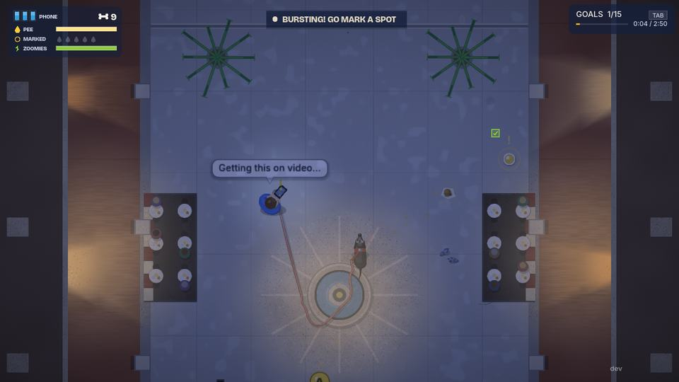
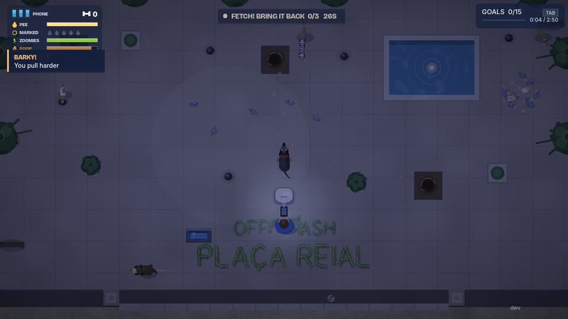

The arcaded square off La Rambla
One step off La Rambla into a palm-framed neoclassical square lit warmly at night under stone arcades, terrace tables, Gaudí's twin dragon lampposts and the Three Graces fountain in the middle.

